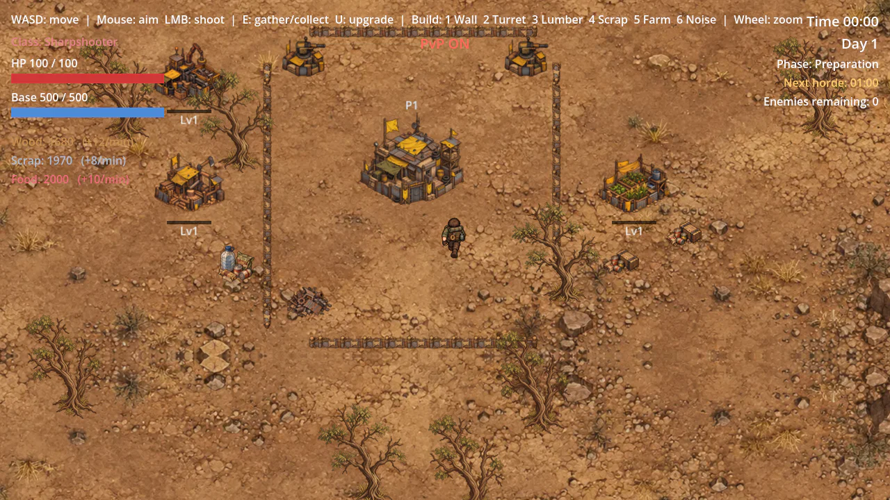
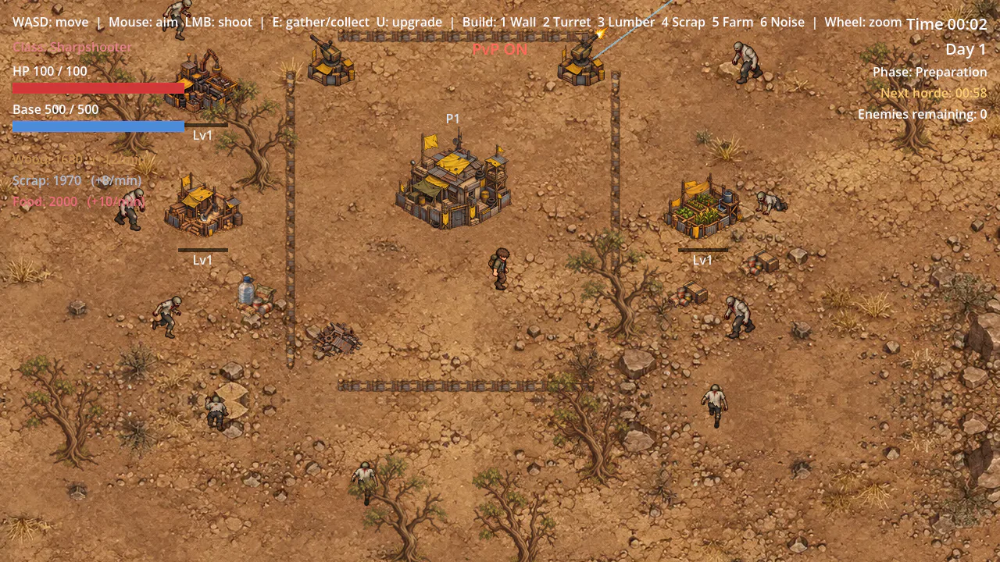
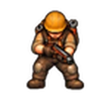
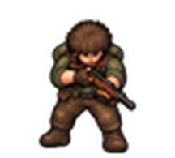
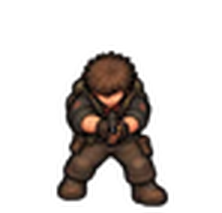
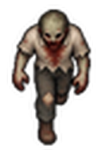
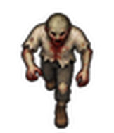
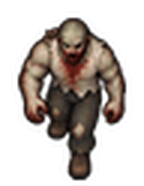
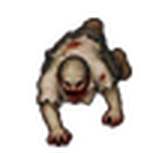

Sobreviva o máximo que puder
Cada jogador tem uma base principal. Se ela cair, acabou. O objetivo é simples: durar mais do que todo mundo.
Hordas crescentes
Ciclos de preparação, horda e recuperação. Cada horda chega maior, mais rápida e mais resistente.
Construa sua base
Paredes que se conectam sozinhas, torres automáticas e prédios de produção que podem ser melhorados.
Recursos e economia
Colete madeira, sucata e comida. Serrarias, coletores e fazendas produzem enquanto você luta.
Manipule as hordas
O Emissor de Ruído atrai zumbis para longe da sua base… ou para perto da base de um rival.
Multiplayer com PvP
Até 4 jogadores online no mesmo mapa. Ataque jogadores e construções inimigas.
Ranking de sobrevivência
Seu tempo de sobrevivência entra no ranking, separado por modo: solo, PvE e PvP.
Imagens
Capturas do protótipo atual.


Escolha sua classe
Todas as classes lutam, constroem e coletam. A diferença está em onde cada uma brilha.

Builder
O engenheiro da base.
- −25% no custo das construções
- +30% de vida nas construções

Sharpshooter
Especialista em combate.
- +25% de dano
- +25% de cadência de tiro
- +20% de alcance

Survivalist
Resistente e rápido na coleta.
- +40% de vida e −20% de dano recebido
- +10% de velocidade
- +50% na coleta




Como jogar
- Baixe o .zip pelo botão de download.
- Extraia o arquivo e abra o LastShelter.exe.
- Digite seu nome no menu.
- Single player para jogar sozinho, ou Online server (internet) para jogar com outras pessoas.
Controles
| Ação | Tecla |
|---|---|
| Mover | W A S D |
| Mirar / atirar | Mouse / Clique esquerdo |
| Coletar / interagir | E |
| Construir | 1 a 6 |
| Posicionar / cancelar | Clique esquerdo / Esc |
| Melhorar construção | U |
| Zoom | Roda do mouse |
Por trás do jogo
Um projeto pessoal feito para aprender desenvolvimento de jogos aplicando boas práticas de back-end.
Servidor autoritativo
O cliente só envia intenções. Dano, recursos, construção e pontuação são validados no servidor.
Anti-trapaça básico
Velocidade e posição dos jogadores são verificadas; teleporte e speed hack são rejeitados.
Servidor dedicado
Godot em modo headless dentro de um container Docker, com comunicação via WebSocket.
Testes automatizados
Servidor e clientes simulados no mesmo processo garantem que nada quebra a cada mudança.
Pronto para sobreviver?
É um protótipo: o feedback de quem joga ajuda muito a decidir os próximos passos.